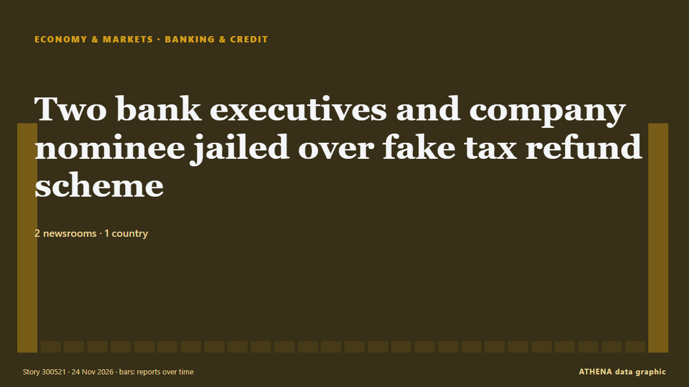

Économie, finance et marchés
SponsoriséPrésenté par  Cybernetics and Artificial Intelligence Lab Welcome to the Cybernetics and Artificial Intelligence Laboratory, established at the Department of Business Administration of the National and Kapodistrian University of Athens. The lab is headed by Professor Dimitrios Thomakos. The lab aims to do research that can be published in top venues. Our research uses tools and methods of Artificial Intelligence, and lies in the following areas: - Forecasting - Decision making - Cyber security - Finance We are always looking forward to collaborating with exceptional students!
Cybernetics and Artificial Intelligence Lab Welcome to the Cybernetics and Artificial Intelligence Laboratory, established at the Department of Business Administration of the National and Kapodistrian University of Athens. The lab is headed by Professor Dimitrios Thomakos. The lab aims to do research that can be published in top venues. Our research uses tools and methods of Artificial Intelligence, and lies in the following areas: - Forecasting - Decision making - Cyber security - Finance We are always looking forward to collaborating with exceptional students!
Les titres sont affichés en anglais, tels que publiés.
Veille des marchés - chiffres officiels
Dans quel sens évoluent les indicateurs officiels des marchés - hausse, baisse ou stabilité - avec la dernière valeur officielle et sa date, et l'actualité des marchés vérifiée par ATHENA. Valeurs officielles, pas des cours en temps réel.
Énergie
| 1 jour | 1 semaine | 1 mois | Valeur officielle | |
|---|---|---|---|---|
| Brent crude | ▬ | ▲ | ▼ | $92,94/bblDonnées officielles du 17 nov. 2026 |
| WTI crude | ▲ | ▼ | ▼ | $89,53/bblDonnées officielles du 17 nov. 2026 |
| US natural gas (Henry Hub) | ▼ | ▲ | ▼ | $3,10/MMBtuDonnées officielles du 17 nov. 2026 |
| European natural gas (1 mois · 3 mois · 12 mois)(1M · 3M · 12M) | ▲ | ▲ | ▲ | $25,49/MMBtuDonnées officielles du 1 sept. 2026 |
| Coal (Australia) (1 mois · 3 mois · 12 mois)(1M · 3M · 12M) | ▲ | ▲ | ▲ | $153,84/tDonnées officielles du 1 sept. 2026 |
Alimentation
| 1 mois | 3 mois | 12 mois | Valeur officielle | |
|---|---|---|---|---|
| Wheat | ▲ | ▲ | ▲ | $246,85/tDonnées officielles du 1 sept. 2026 |
Bourses américaines
| 1 jour | 1 semaine | 1 mois | Valeur officielle | |
|---|---|---|---|---|
| S&P 500 | ▼ | ▼ | ▼ | Mouvement inhabituel Direction seulement (indice © Cboe)Données officielles du 20 nov. 2026 |
| Nasdaq Composite | ▼ | ▼ | ▼ | Direction seulement (indice © Cboe)Données officielles du 19 nov. 2026 |
Taux, risque et dollar
| 1 jour | 1 semaine | 1 mois | Valeur officielle | |
|---|---|---|---|---|
| US 10-year Treasury yield | ▼ | ▼ | ▼ | 4,92 %Données officielles du 20 nov. 2026 |
| Market volatility (VIX) | ▲ | ▲ | ▲ | Direction seulement (indice © Cboe)Données officielles du 20 nov. 2026 |
| US dollar, broad index | ▬ | ▲ | ▲ | 123,60Données officielles du 20 nov. 2026 |
L'euro face aux autres monnaies
| 1 jour | 1 semaine | 1 mois | Valeur officielle | |
|---|---|---|---|---|
| EUR/USD | ▼ | ▼ | ▼ | 1,0939 USDDonnées officielles du 23 nov. 2026 |
| EUR/GBP | ▬ | ▲ | ▬ | 0,8367 GBPDonnées officielles du 23 nov. 2026 |
| EUR/CHF | ▼ | ▼ | ▼ | 0,9186 CHFDonnées officielles du 23 nov. 2026 |
| EUR/JPY | ▼ | ▼ | ▼ | 174,01 JPYDonnées officielles du 23 nov. 2026 |
| EUR/CNY | ▼ | ▼ | ▼ | 7,2905 CNYDonnées officielles du 23 nov. 2026 |
| EUR/TRY | ▼ | ▼ | ▼ | 55,340 TRYDonnées officielles du 23 nov. 2026 |
| EUR/NOK | ▲ | ▲ | ▲ | 10,7285 NOKDonnées officielles du 23 nov. 2026 |
Sources : Energy Information Administration des États-Unis (pétrole, gaz américain), FMI (gaz européen, charbon, blé), Trésor et Réserve fédérale des États-Unis (taux à 10 ans, indice du dollar) Cboe (VIX), S&P Dow Jones Indices (S&P 500) et Nasdaq (Nasdaq Composite), via FRED (Réserve fédérale de Saint-Louis) ; taux de référence de l'euro © Banque centrale européenne. Les chiffres sont les dernières valeurs officielles avec leur date, pas des cours en temps réel. Les directions sont calculées par ATHENA.
Crypto, ETF et actions dans l'actualité
- US stocks surge after last week's losses, Nvidia +33% Risque 3.2 23 nov.
- 5 Energy Stocks That Can Shrug Off a December Fed Rate Hike Risque 3.0 23 nov.
- Dubai Islamic Bank shares surge 11% on potential acquisition deal Risque 1.0 23 nov.
- ECOWAS Monetary Union: Cardoso advocates equity, fairness in governance structure Risque 0.0 23 nov.
- Sheikh Hamdan shares Dubai Run aerial footage as more than 310,000 runners take over Sheikh Zayed Road Risque 0.0 23 nov.
- South Korean shares slump nearly 3% on AI-driven tech selloff despite policy pledge Risque 1.5 23 nov.
- PSX: stocks surge, KSE-100 up nearly 1,200 points Risque 0.7 23 nov.
- Stock markets decline in early trade amid global sell-off, profit taking after two-day rally Risque 3.9 23 nov.
- US stock futures jump over 2% in relief bounce, gold rallies, but Kospi slides nearly 4% Risque 1.1 23 nov.
- Anthropic’s Record IPO Raises Hopes for a Charitable Windfall That Has Nonprofits Preparing to Scale Risque 0.0 23 nov.

Banques et créditTwo bank executives and company nominee jailed over fake tax refund scheme
Bank branch manager in eastern Attica denies wrongdoing in testimony – Nine other suspects, including accountants alleged to have played a central role in the operation, are expected to give evidence… de ProtoThema English
| 11 nov. | 129 |
|---|---|
| 12 nov. | 113 |
| 13 nov. | 71 |
| 14 nov. | 39 |
| 15 nov. | 64 |
| 16 nov. | 127 |
| 17 nov. | 101 |
| 18 nov. | 104 |
| 19 nov. | 108 |
| 20 nov. | 77 |
| 21 nov. | 34 |
| 22 nov. | 39 |
| 23 nov. | 57 |
| 24 nov. | 2 |
Trump to welcome investors at gala for his plunging meme coin
President Donald Trump will host a gala for investors of the $TRUMP meme coin, which has seen its value plummet from approximately $75 to under $1 in 20 months. de Arab News
Final mile delivery prices climb 10.5% in Q3, GEODIS says
Courier and local freight prices rose 10.2% and 10.7% in the third quarter, according to a new GEODIS index, against a 3.5% rise in consumer prices over the same period. de FreightWaves
Shoppers rush to buy gold
Sharp price drop drives demand for jewellery and gold bars. de News of Bahrain
Saudi Arabia to Saudise 50% of jobs in 17 financial professions from May 2027
Dubai: Saudi Arabia will require private-sector companies to employ at least 50 per cent Saudi nationals across 17 financial professions from May 23, 2027, in a move aimed at expanding employment… de Gulf News
Cold weather threatens Europe's already strained gas reserves
Forecasts of a sharp drop in temperatures across Europe have triggered a rapid increase in natural gas prices. de AzerNews
Japanese Yen strengths as inflation data reaffirms BoJ rate hike bets
The USD/JPY pair edges lower during the Asian session on Friday following the release of Japan's consumer inflation figures, which lifts Bank of Japan (BoJ) rate hike bets and underpins the Japanese… de FXStreet
Kipit Asset Management Appoints Mr. Luke Ofojebe, CFA, as Acting Managing Director
As part of its strategic positioning, Kipit Asset Management Limited (formerly Fortuna Capital Limited), a Securities and Exchange Commission (SEC) licensed Fund & Portfolio Management Company, has… de Vanguard
Trump: Illegal for Deutsche Bank to leak tax records
United States President Donald Trump told reporters on Tuesday that it was "illegal" for Deutsche Bank to leak his tax records, shortly after the institution distanced itself from the 2017 breach. de AzerNews
Moody’s revises Hungary’s rating outlook to stable
Moody’s affirmed Hungary’s sovereign rating at Baa2 while revising the outlook from negative to stable. de FXStreet
Sri Lankans spend Rs. 560Mn daily on alcohol
Alcohol-dependent individuals in Sri Lanka collectively spend around Rs. de Daily Mirror
Infected TV boxes in BADBOX 3.0 rent out their owners’ home internet
HUMAN’s Satori Threat Intelligence and Research Team has disrupted BADBOX 3.0, an operation run mainly from infected low-cost TV boxes that generated roughly 40 billion ad bid requests a day at its… de Help Net Security
Art Basel Hong Kong Lines Up 232 Exhibitors and a New Floor Plan for Its 2027 Edition
The fair will also feature 31 first-time exhibitors. de ARTnews
Israeli attacks on medics in occupied West Bank surge by 350%: Rights group
Physicians for Human Rights Israel says medics face 'dangerous escalation' in violence from soldiers and settlers. de Al Jazeera English
‘No use pretending otherwise’: Chalmers warns of tough year ahead as jobless and inflation forecasts worsen
Jim Chalmers is warning of a year “full of risks”, saying unemployment and inflation will be higher and economic growth slower. de Sydney Morning Herald
Oil prices exceed $92 on global commodity markets
Retail fuel prices in Cambodia fell again yesterday following a decline in international oil markets, according to the Ministry of Commerce. de Khmer Times
Investors flip the switch on the AI trade
After tech stocks tumbled, are markets entering a new era? de Financial Times - Markets
SK Hynix to become Kioxia's top shareholder with bond conversion
Korean chip giant SK hynix Inc. is considering converting convertible bonds (CBs) linked to its investment in Kioxia Corp., a Japanese NAND flash memory maker, into shares, industry sources said… de The Korea Times
How ‘GTA VI’ surpassed all expectations
You can paint your bedroom walls. You can scuba dive and explore shipwrecks. de Bangkok Post
UAE weather: Red alert issued for fog; temperatures to dip to 18ºC in some areas
Residents in the UAE can expect fair to partly cloudy weather conditions on Sunday, November 22, according to National Centre of Meteorology (NCM). de Khaleej Times (working feed)
Retail sales volumes jump 2.2%, biggest rise since December 2021
September quarter retail sales have surprised on the upside. de New Zealand Herald
S&P 500 Sinks 3.7% and Nasdaq Composite Goes Negative for the Year as Tech Sell-off Worsens
A bruising sell-off in artificial intelligence stocks on Friday pulled the S&P 500 down 3.7%, dragging the index to its worst weekly loss in more than 18 months, and knocking the Nasdaq composite… de The National Herald
Constitution may be amended to permanently ban AL if needed: Shahe Alam
The state minister says the government and opposition could reach a consensus on constitutional changes, while ruling out the party's return to politics. de The Business Standard (Bangladesh) (working feed)
“Even if it keeps you out of power, support $10bn programme” – Mahama to Minority
President John Dramani Mahama has urged the Minority in Parliament to support the government’s $10 billion New Economy programme, saying its success would benefit Ghana even if it prolongs the… de MyJoyOnline
New apartment complexes planned for Colombo by 2027
The Government plans to address housing and settlement problems in Colombo and other urban areas by 2027 through a programme to construct new apartment complexes in collaboration with the private… de Daily Mirror
Beyond Degrees: Skills Take Centre Stage in Hiring
Employers are increasingly prioritising practical experience, proven abilities and professional skills alongside traditional academic qualifications. de News of Bahrain
EU leaders’ chair proposes new cuts to EU 2028-2034 budget draft, suggests digital tax
BRUSSELS, Nov 21 - The chairman of European Union leaders proposed further cuts to the European Commission's draft EU 2028-2034 budget on Saturday and suggested new revenue streams for the EU… de The Straits Times
PM Modi Credits People For Fall In Gold Prices, Links It To His May Appeal
PM Modi had appealed to the nation to avoid buying gold in May, when India's foreign exchange came under pressure with the Middle East conflict pushing up crude prices. de NDTV
US to welcome international co-productions once tax credit in place, says Trump advisor
Paul says Qatar should be first on the list of countries to co-produce with the US. de Screen Daily
Malaysia set to hold rates on strong growth, signal hike in 2027
Inflation in Malaysia remain moderate, despite a surge in global oil prices. de The Business Times
McKinney earns England Test call up for South Africa series
England have added Ben McKinney to their Test squad touring South Africa next month, with the uncapped Durham opener serving as a replacement for the injured Jacob Bethell. de Sky Sports
Croatia among EU countries where people are least likely to travel by plane
November the 22nd, 2026 – Snow is set to fall in Croatia next week, but there are areas far more likely than others to turn into a winter wonderland. de Total Croatia News
US visa holders are fed up and leaving tech jobs
Uncertainty over H-1B rules and permanent residency is prompting some highly skilled Indian professionals to consider leaving the US, despite strong jobs and career prospects in its technology sector. de Business Standard
Bitcoin rises after falling to two-year low
BENGALURU: Bitcoin, the world’s largest cryptocurrency by market value, rose more than 8 percent to around USD 59,952 on Saturday, after sliding to its lowest level in two years earlier in the day. de Business Recorder
Islam forecast to exceed Christianity as world's biggest religion by middle of next decade
Islam is expected to surpass Christianity as the world’s biggest religion by the middle of the next decade, the Pew Research Centre projected on Wednesday. de Dawn